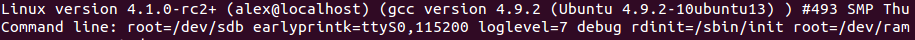

Kernel initialization. Part 8.
Scheduler initialization
This is the eighth part of the Linux kernel initialization process chapter and we stopped on the setup_nr_cpu_ids function in the previous part.
The main point of this part is scheduler initialization. But before we will start to learn initialization process of the scheduler, we need to do some stuff. The next step in the init/main.c is the setup_per_cpu_areas function. This function setups memory areas for the percpu variables, more about it you can read in the special part about the Per-CPU variables. After percpu areas is up and running, the next step is the smp_prepare_boot_cpu function.
This function does some preparations for symmetric multiprocessing. Since this function is architecture specific, it is located in the arch/x86/include/asm/smp.h Linux kernel header file. Let's look at the definition of this function:
static inline void smp_prepare_boot_cpu(void)
{
smp_ops.smp_prepare_boot_cpu();
}
We may see here that it just calls the smp_prepare_boot_cpu callback of the smp_ops structure. If we look at the definition of instance of this structure from the arch/x86/kernel/smp.c source code file, we will see that the smp_prepare_boot_cpu expands to the call of the native_smp_prepare_boot_cpu function:
struct smp_ops smp_ops = {
...
...
...
smp_prepare_boot_cpu = native_smp_prepare_boot_cpu,
...
...
...
}
EXPORT_SYMBOL_GPL(smp_ops);
The native_smp_prepare_boot_cpu function looks:
void __init native_smp_prepare_boot_cpu(void)
{
int me = smp_processor_id();
switch_to_new_gdt(me);
cpumask_set_cpu(me, cpu_callout_mask);
per_cpu(cpu_state, me) = CPU_ONLINE;
}
and executes following things: first of all it gets the id of the current CPU (which is Bootstrap processor and its id is zero for this moment) with the smp_processor_id function. I will not explain how the smp_processor_id works, because we already saw it in the Kernel entry point part. After we've got processor id number we reload Global Descriptor Table for the given CPU with the switch_to_new_gdt function:
void switch_to_new_gdt(int cpu)
{
struct desc_ptr gdt_descr;
gdt_descr.address = (long)get_cpu_gdt_table(cpu);
gdt_descr.size = GDT_SIZE - 1;
load_gdt(&gdt_descr);
load_percpu_segment(cpu);
}
The gdt_descr variable represents pointer to the GDT descriptor here (we already saw definition of a desc_ptr structure in the Early interrupt and exception handling part). We get the address and the size of the GDT descriptor for the CPU with the given id. The GDT_SIZE is 256 or:
#define GDT_SIZE (GDT_ENTRIES * 8)
and the address of the descriptor we will get with the get_cpu_gdt_table:
static inline struct desc_struct *get_cpu_gdt_table(unsigned int cpu)
{
return per_cpu(gdt_page, cpu).gdt;
}
The get_cpu_gdt_table uses per_cpu macro for getting value of a gdt_page percpu variable for the given CPU number (bootstrap processor with id - 0 in our case).
You may ask the following question: so, if we can access gdt_page percpu variable, where was it defined? Actually we already saw it in this book. If you have read the first part of this chapter, you can remember that we saw definition of the gdt_page in the arch/x86/kernel/head_64.S:
early_gdt_descr:
.word GDT_ENTRIES*8-1
early_gdt_descr_base:
.quad INIT_PER_CPU_VAR(gdt_page)
and if we will look on the linker file we can see that it locates after the __per_cpu_load symbol:
#define INIT_PER_CPU(x) init_per_cpu__##x = x + __per_cpu_load
INIT_PER_CPU(gdt_page);
and filled gdt_page in the arch/x86/kernel/cpu/common.c:
DEFINE_PER_CPU_PAGE_ALIGNED(struct gdt_page, gdt_page) = { .gdt = {
#ifdef CONFIG_X86_64
[GDT_ENTRY_KERNEL32_CS] = GDT_ENTRY_INIT(0xc09b, 0, 0xfffff),
[GDT_ENTRY_KERNEL_CS] = GDT_ENTRY_INIT(0xa09b, 0, 0xfffff),
[GDT_ENTRY_KERNEL_DS] = GDT_ENTRY_INIT(0xc093, 0, 0xfffff),
[GDT_ENTRY_DEFAULT_USER32_CS] = GDT_ENTRY_INIT(0xc0fb, 0, 0xfffff),
[GDT_ENTRY_DEFAULT_USER_DS] = GDT_ENTRY_INIT(0xc0f3, 0, 0xfffff),
[GDT_ENTRY_DEFAULT_USER_CS] = GDT_ENTRY_INIT(0xa0fb, 0, 0xfffff),
...
...
...
more about percpu variables you can read in the Per-CPU variables part. As we got address and size of the GDT descriptor we reload GDT with the load_gdt which just execute lgdt instruct and load percpu_segment with the following function:
void load_percpu_segment(int cpu) {
loadsegment(gs, 0);
wrmsrl(MSR_GS_BASE, (unsigned long)per_cpu(irq_stack_union.gs_base, cpu));
load_stack_canary_segment();
}
The base address of the percpu area must contain gs register (or fs register for x86), so we are using loadsegment macro and pass gs. In the next step we write the base address if the IRQ stack and setup stack canary (this is only for x86_32). After we load new GDT, we fill cpu_callout_mask bitmap with the current cpu and set cpu state as online with the setting cpu_state percpu variable for the current processor - CPU_ONLINE:
cpumask_set_cpu(me, cpu_callout_mask);
per_cpu(cpu_state, me) = CPU_ONLINE;
So, what is cpu_callout_mask bitmap? As we initialized bootstrap processor (processor which is booted the first on x86) the other processors in a multiprocessor system are known as secondary processors. Linux kernel uses following two bitmasks:
cpu_callout_maskcpu_callin_mask
After bootstrap processor initialized, it updates the cpu_callout_mask to indicate which secondary processor can be initialized next. All other or secondary processors can do some initialization stuff before and check the cpu_callout_mask on the bootstrap processor bit. Only after the bootstrap processor filled the cpu_callout_mask with this secondary processor, it will continue the rest of its initialization. After that the certain processor finish its initialization process, the processor sets bit in the cpu_callin_mask. Once the bootstrap processor finds the bit in the cpu_callin_mask for the current secondary processor, this processor repeats the same procedure for initialization of one of the remaining secondary processors. In a short words it works as I described, but we will see more details in the chapter about SMP.
That's all. We did all SMP boot preparation.
Build zonelists
In the next step we can see the call of the build_all_zonelists function. This function sets up the order of zones that allocations are preferred from. What are zones and what's order we will understand soon. For the start let's see how Linux kernel considers physical memory. Physical memory is split into banks which are called - nodes. If you have no hardware support for NUMA, you will see only one node:
$ cat /sys/devices/system/node/node0/numastat
numa_hit 72452442
numa_miss 0
numa_foreign 0
interleave_hit 12925
local_node 72452442
other_node 0
Every node is presented by the struct pglist_data in the Linux kernel. Each node is divided into a number of special blocks which are called - zones. Every zone is presented by the zone struct in the linux kernel and has one of the type:
ZONE_DMA- 0-16M;ZONE_DMA32- used for 32 bit devices that can only do DMA areas below 4G;ZONE_NORMAL- all RAM from the 4GB on thex86_64;ZONE_HIGHMEM- absent on thex86_64;ZONE_MOVABLE- zone which contains movable pages.
which are presented by the zone_type enum. We can get information about zones with the:
$ cat /proc/zoneinfo
Node 0, zone DMA
pages free 3975
min 3
low 3
...
...
Node 0, zone DMA32
pages free 694163
min 875
low 1093
...
...
Node 0, zone Normal
pages free 2529995
min 3146
low 3932
...
...
As I wrote above all nodes are described with the pglist_data or pg_data_t structure in memory. This structure is defined in the include/linux/mmzone.h. The build_all_zonelists function from the mm/page_alloc.c constructs an ordered zonelist (of different zones DMA, DMA32, NORMAL, HIGH_MEMORY, MOVABLE) which specifies the zones/nodes to visit when a selected zone or node cannot satisfy the allocation request. That's all. More about NUMA and multiprocessor systems will be in the special part.
The rest of the stuff before scheduler initialization
Before we start to dive into Linux kernel scheduler initialization process we must do a couple of things. The first thing is the page_alloc_init function from the mm/page_alloc.c. This function looks pretty easy:
void __init page_alloc_init(void)
{
int ret;
ret = cpuhp_setup_state_nocalls(CPUHP_PAGE_ALLOC_DEAD,
"mm/page_alloc:dead", NULL,
page_alloc_cpu_dead);
WARN_ON(ret < 0);
}
It setups setup the startup and teardown callbacks (second and third parameters) for the CPUHP_PAGE_ALLOC_DEAD cpu hotplug state. Of course the implementation of this function depends on the CONFIG_HOTPLUG_CPU kernel configuration option and if this option is set, such callbacks will be set for all cpu(s) in the system depends on their hotplug states. hotplug mechanism is a big theme and it will not be described in this book.
After this function we can see the kernel command line in the initialization output:

And a couple of functions such as parse_early_param and parse_args which handles Linux kernel command line. You may remember that we already saw the call of the parse_early_param function in the sixth part of the kernel initialization chapter, so why we call it again? Answer is simple: we call this function in the architecture-specific code (x86_64 in our case), but not all architecture calls this function. And we need to call the second function parse_args to parse and handle non-early command line arguments.
In the next step we can see the call of the jump_label_init from the kernel/jump_label.c. and initializes jump label.
After this we can see the call of the setup_log_buf function which setups the printk log buffer. We already saw this function in the seventh part of the Linux kernel initialization process chapter.
PID hash initialization
The next is pidhash_init function. As you know each process has assigned a unique number which called - process identification number or PID. Each process generated with fork or clone is automatically assigned a new unique PID value by the kernel. The management of PIDs centered around the two special data structures: struct pid and struct upid. First structure represents information about a PID in the kernel. The second structure represents the information that is visible in a specific namespace. All PID instances stored in the special hash table:
static struct hlist_head *pid_hash;
This hash table is used to find the pid instance that belongs to a numeric PID value. So, pidhash_init initializes this hash table. In the start of the pidhash_init function we can see the call of the alloc_large_system_hash:
pid_hash = alloc_large_system_hash("PID", sizeof(*pid_hash), 0, 18,
HASH_EARLY | HASH_SMALL,
&pidhash_shift, NULL,
0, 4096);
The number of elements of the pid_hash depends on the RAM configuration, but it can be between 2^4 and 2^12. The pidhash_init computes the size
and allocates the required storage (which is hlist in our case - the same as doubly linked list, but contains one pointer instead on the struct hlist_head. The alloc_large_system_hash function allocates a large system hash table with memblock_virt_alloc_nopanic if we pass HASH_EARLY flag (as it in our case) or with __vmalloc if we did no pass this flag.
The result we can see in the dmesg output:
$ dmesg | grep hash
[ 0.000000] PID hash table entries: 4096 (order: 3, 32768 bytes)
...
...
...
That's all. The rest of the stuff before scheduler initialization is the following functions: vfs_caches_init_early does early initialization of the virtual file system (more about it will be in the chapter which will describe virtual file system), sort_main_extable sorts the kernel's built-in exception table entries which are between __start___ex_table and __stop___ex_table, and trap_init initializes trap handlers (more about last two function we will know in the separate chapter about interrupts).
The last step before the scheduler initialization is initialization of the memory manager with the mm_init function from the init/main.c. As we can see, the mm_init function initializes different parts of the Linux kernel memory manager:
page_ext_init_flatmem();
mem_init();
kmem_cache_init();
percpu_init_late();
pgtable_init();
vmalloc_init();
The first is page_ext_init_flatmem which depends on the CONFIG_SPARSEMEM kernel configuration option and initializes extended data per page handling. The mem_init releases all bootmem, the kmem_cache_init initializes kernel cache, the percpu_init_late - replaces percpu chunks with those allocated by slub, the pgtable_init - initializes the page->ptl kernel cache, the vmalloc_init - initializes vmalloc. Please, NOTE that we will not dive into details about all of these functions and concepts, but we will see all of them it in the Linux kernel memory manager chapter.
That's all. Now we can look on the scheduler.
Scheduler initialization
And now we come to the main purpose of this part - initialization of the task scheduler. I want to say again as I already did it many times, you will not see the full explanation of the scheduler here, there will be special separate chapter about this. Here will be described first initial scheduler mechanisms which are initialized first of all. So let's start.
Our current point is the sched_init function from the kernel/sched/core.c kernel source code file and as we can understand from the function's name, it initializes scheduler. Let's start to dive into this function and try to understand how the scheduler is initialized. At the start of the sched_init function we can see the following call:
sched_clock_init();
The sched_clock_init is pretty easy function and as we may see it just sets sched_clock_init variable:
void sched_clock_init(void)
{
sched_clock_running = 1;
}
that will be used later. At the next step is initialization of the array of waitqueues:
for (i = 0; i < WAIT_TABLE_SIZE; i++)
init_waitqueue_head(bit_wait_table + i);
where bit_wait_table is defined as:
#define WAIT_TABLE_BITS 8
#define WAIT_TABLE_SIZE (1 << WAIT_TABLE_BITS)
static wait_queue_head_t bit_wait_table[WAIT_TABLE_SIZE] __cacheline_aligned;
The bit_wait_table is array of wait queues that will be used for wait/wake up of processes depends on the value of a designated bit. The next step after initialization of waitqueues array is calculating size of memory to allocate for the root_task_group. As we may see this size depends on two following kernel configuration options:
#ifdef CONFIG_FAIR_GROUP_SCHED
alloc_size += 2 * nr_cpu_ids * sizeof(void **);
#endif
#ifdef CONFIG_RT_GROUP_SCHED
alloc_size += 2 * nr_cpu_ids * sizeof(void **);
#endif
CONFIG_FAIR_GROUP_SCHED;CONFIG_RT_GROUP_SCHED.
Both of these options provide two different planning models. As we can read from the documentation, the current scheduler - CFS or Completely Fair Scheduler use a simple concept. It models process scheduling as if the system has an ideal multitasking processor where each process would receive 1/n processor time, where n is the number of the runnable processes. The scheduler uses the special set of rules. These rules determine when and how to select a new process to run and they are called scheduling policy.
The Completely Fair Scheduler supports following normal or in other words non-real-time scheduling policies:
SCHED_NORMAL;SCHED_BATCH;SCHED_IDLE.
The SCHED_NORMAL is used for the most normal applications, the amount of cpu each process consumes is mostly determined by the nice value, the SCHED_BATCH used for the 100% non-interactive tasks and the SCHED_IDLE runs tasks only when the processor has no task to run besides this task.
The real-time policies are also supported for the time-critical applications: SCHED_FIFO and SCHED_RR. If you've read something about the Linux kernel scheduler, you can know that it is modular. That means it supports different algorithms to schedule different types of processes. Usually this modularity is called scheduler classes. These modules encapsulate scheduling policy details and are handled by the scheduler core without knowing too much about them.
Now let's get back to the our code and look on the two configuration options: CONFIG_FAIR_GROUP_SCHED and CONFIG_RT_GROUP_SCHED. The smallest unit that the scheduler works with is an individual task or thread. However, a process is not the only type of entity that the scheduler can operate with. Both of these options provide support for group scheduling. The first option provides support for group scheduling with the completely fair scheduler policies and the second with the real-time policies respectively.
In simple words, group scheduling is a feature that allows us to schedule a set of tasks as if they were a single task. For example, if you create a group with two tasks on the group, then this group is just like one normal task, from the kernel perspective. After a group is scheduled, the scheduler will pick a task from this group and it will be scheduled inside the group. So, such mechanism allows us to build hierarchies and manage their resources. Although a minimal unit of scheduling is a process, the Linux kernel scheduler does not use task_struct structure under the hood. There is special sched_entity structure that is used by the Linux kernel scheduler as scheduling unit.
So, the current goal is to calculate a space to allocate for a sched_entity(ies) of the root task group and we do it two times with:
#ifdef CONFIG_FAIR_GROUP_SCHED
alloc_size += 2 * nr_cpu_ids * sizeof(void **);
#endif
#ifdef CONFIG_RT_GROUP_SCHED
alloc_size += 2 * nr_cpu_ids * sizeof(void **);
#endif
The first is for case when scheduling of task groups is enabled with completely fair scheduler and the second is for the same purpose by in a case of real-time scheduler. So here we calculate size which is equal to size of a pointer multiplied on amount of CPUs in the system and multiplied to 2. We need to multiply this on 2 as we will need to allocate a space for two things:
- scheduler entity structure;
runqueue.
After we have calculated size, we allocate a space with the kzalloc function and set pointers of sched_entity and runqueues there:
ptr = (unsigned long)kzalloc(alloc_size, GFP_NOWAIT);
#ifdef CONFIG_FAIR_GROUP_SCHED
root_task_group.se = (struct sched_entity **)ptr;
ptr += nr_cpu_ids * sizeof(void **);
root_task_group.cfs_rq = (struct cfs_rq **)ptr;
ptr += nr_cpu_ids * sizeof(void **);
#endif
#ifdef CONFIG_RT_GROUP_SCHED
root_task_group.rt_se = (struct sched_rt_entity **)ptr;
ptr += nr_cpu_ids * sizeof(void **);
root_task_group.rt_rq = (struct rt_rq **)ptr;
ptr += nr_cpu_ids * sizeof(void **);
#endif
As I already mentioned, the Linux group scheduling mechanism allows to specify a hierarchy. The root of such hierarchies is the root_runqueuetask_group task group structure. This structure contains many fields, but we are interested in se, rt_se, cfs_rq and rt_rq for this moment:
The first two are instances of sched_entity structure. It is defined in the include/linux/sched.h kernel header filed and used by the scheduler as a unit of scheduling.
struct task_group {
...
...
struct sched_entity **se;
struct cfs_rq **cfs_rq;
...
...
}
The cfs_rq and rt_rq present run queues. A run queue is a special per-cpu structure that is used by the Linux kernel scheduler to store active threads or in other words set of threads which potentially will be picked up by the scheduler to run.
The space is allocated and the next step is to initialize a bandwidth of CPU for real-time and deadline tasks:
init_rt_bandwidth(&def_rt_bandwidth,
global_rt_period(), global_rt_runtime());
init_dl_bandwidth(&def_dl_bandwidth,
global_rt_period(), global_rt_runtime());
All groups have to be able to rely on the amount of CPU time. The two following structures: def_rt_bandwidth and def_dl_bandwidth represent default values of bandwidths for real-time and deadline tasks. We will not look at definition of these structures as it is not so important for now, but we are interested in two following values:
sched_rt_period_us;sched_rt_runtime_us.
The first represents a period and the second represents quantum that is allocated for real-time tasks during sched_rt_period_us. You may see global values of these parameters in the:
$ cat /proc/sys/kernel/sched_rt_period_us
1000000
$ cat /proc/sys/kernel/sched_rt_runtime_us
950000
The values related to a group can be configured in <cgroup>/cpu.rt_period_us and <cgroup>/cpu.rt_runtime_us. Due no one filesystem is not mounted yet, the def_rt_bandwidth and the def_dl_bandwidth will be initialized with default values which will be returned by the global_rt_period and global_rt_runtime functions.
That's all with the bandwiths of real-time and deadline tasks and in the next step, depends on enable of SMP, we make initialization of the root domain:
#ifdef CONFIG_SMP
init_defrootdomain();
#endif
The real-time scheduler requires global resources to make scheduling decision. But unfortunately scalability bottlenecks appear as the number of CPUs increase. The concept of root domains was introduced for improving scalability and avoid such bottlenecks. Instead of bypassing over all run queues, the scheduler gets information about a CPU where/from to push/pull a real-time task from the root_domain structure. This structure is defined in the kernel/sched/sched.h kernel header file and just keeps track of CPUs that can be used to push or pull a process.
After root domain initialization, we make initialization of the bandwidth for the real-time tasks of the root task group as we did the same above:
#ifdef CONFIG_RT_GROUP_SCHED
init_rt_bandwidth(&root_task_group.rt_bandwidth,
global_rt_period(), global_rt_runtime());
#endif
with the same default values.
In the next step, depends on the CONFIG_CGROUP_SCHED kernel configuration option we allocate slab cache for task_group(s) and initialize the siblings and children lists of the root task group. As we can read from the documentation, the CONFIG_CGROUP_SCHED is:
This option allows you to create arbitrary task groups using the "cgroup" pseudo
filesystem and control the cpu bandwidth allocated to each such task group.
As we finished with the lists initialization, we can see the call of the autogroup_init function:
#ifdef CONFIG_CGROUP_SCHED
list_add(&root_task_group.list, &task_groups);
INIT_LIST_HEAD(&root_task_group.children);
INIT_LIST_HEAD(&root_task_group.siblings);
autogroup_init(&init_task);
#endif
which initializes automatic process group scheduling. The autogroup feature is about automatic creation and population of a new task group during creation of a new session via setsid call.
After this we are going through the all possible CPUs (you can remember that possible CPUs are stored in the cpu_possible_mask bitmap that can ever be available in the system) and initialize a runqueue for each possible cpu:
for_each_possible_cpu(i) {
struct rq *rq;
...
...
...
The rq structure in the Linux kernel is defined in the kernel/sched/sched.h. As I already mentioned this above, a run queue is a fundamental data structure in a scheduling process. The scheduler uses it to determine who will be ran next. As you may see, this structure has many different fields and we will not cover all of them here, but we will look on them when they will be directly used.
After initialization of per-cpu run queues with default values, we need to setup load weight of the first task in the system:
set_load_weight(&init_task);
First of all let's try to understand what is it load weight of a process. If you will look at the definition of the sched_entity structure, you will see that it starts from the load field:
struct sched_entity {
struct load_weight load;
...
...
...
}
represented by the load_weight structure which just contains two fields that represent actual load weight of a scheduler entity and its invariant value:
struct load_weight {
unsigned long weight;
u32 inv_weight;
};
You already may know that each process in the system has priority. The higher priority allows to get more time to run. A load weight of a process is a relation between priority of this process and timeslices of this process. Each process has three following fields related to priority:
struct task_struct {
...
...
...
int prio;
int static_prio;
int normal_prio;
...
...
...
}
The first one is dynamic priority which can't be changed during lifetime of a process based on its static priority and interactivity of the process. The static_prio contains initial priority most likely well-known to you nice value. This value is not changed by the kernel if a user does not change it. The last one is normal_priority based on the value of the static_prio too, but also it depends on the scheduling policy of a process.
So the main goal of the set_load_weight function is to initialize load_weight fields for the init task:
static void set_load_weight(struct task_struct *p)
{
int prio = p->static_prio - MAX_RT_PRIO;
struct load_weight *load = &p->se.load;
if (idle_policy(p->policy)) {
load->weight = scale_load(WEIGHT_IDLEPRIO);
load->inv_weight = WMULT_IDLEPRIO;
return;
}
load->weight = scale_load(sched_prio_to_weight[prio]);
load->inv_weight = sched_prio_to_wmult[prio];
}
As you may see we calculate initial prio from the initial value of the static_prio of the init task and use it as index of sched_prio_to_weight and sched_prio_to_wmult arrays to set weight and inv_weight values. These two arrays contain a load weight depends on priority value. In a case of when a process is idle process, we set minimal load weight.
For this moment we came to the end of initialization process of the Linux kernel scheduler. The last steps are: to make current process (it will be the first init process) idle that will be ran when a cpu has no other process to run. Calculating next time period of the next calculation of CPU load and initialization of the fair class:
__init void init_sched_fair_class(void)
{
#ifdef CONFIG_SMP
open_softirq(SCHED_SOFTIRQ, run_rebalance_domains);
#endif
}
Here we register a soft irq that will call the run_rebalance_domains handler. After the SCHED_SOFTIRQ will be triggered, the run_rebalance will be called to rebalance a run queue on the current CPU.
The last two steps of the sched_init function is to initialization of scheduler statistics and setting scheeduler_running variable:
scheduler_running = 1;
That's all. Linux kernel scheduler is initialized. Of course, we have skipped many different details and explanations here, because we need to know and understand how different concepts (like process and process groups, runqueue, rcu, etc.) works in the Linux kernel , but we took a short look on the scheduler initialization process. We will look all other details in the separate part which will be fully dedicated to the scheduler.
Conclusion
It is the end of the eighth part about the Linux kernel initialization process. In this part, we looked on the initialization process of the scheduler and we will continue in the next part to dive in the linux kernel initialization process and will see initialization of the RCU and many other initialization stuff in the next part.
If you have any questions or suggestions write me a comment or ping me at twitter.
Please note that English is not my first language, And I am really sorry for any inconvenience. If you find any mistakes please send me PR to linux-insides.